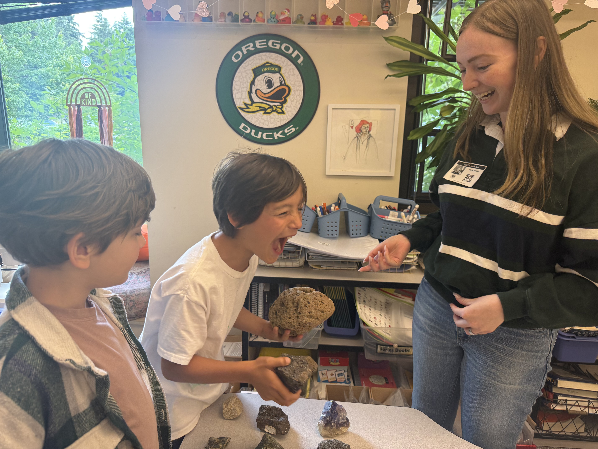
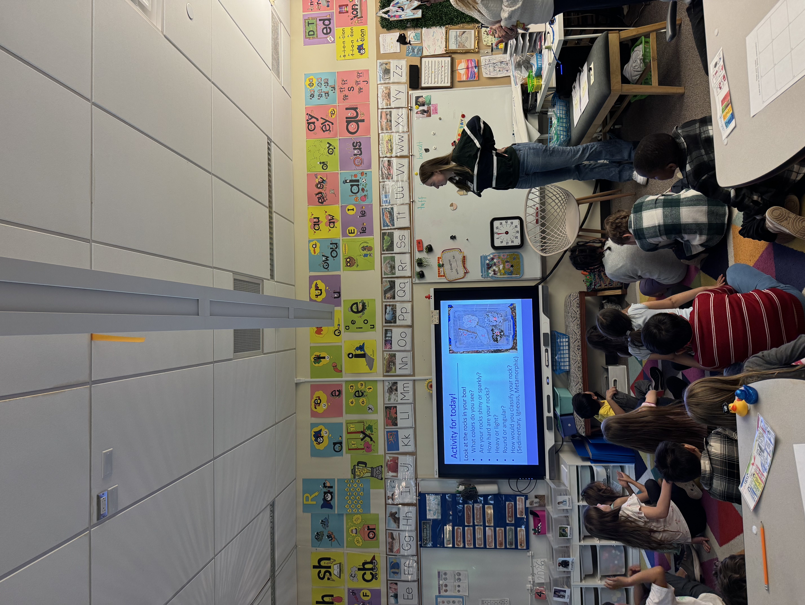

Outreach
I am passionate about making Earth and Space Science accessible to students of all ages. Through classroom visits, educational activities, and hands-on demonstrations, I aim to help learners develop curiosity about the natural world and gain a deeper understanding of geologic processes.
My outreach experiences have included developing lesson plans, leading interactive activities, and creating educational materials that connect current geoscience research with classroom learning.